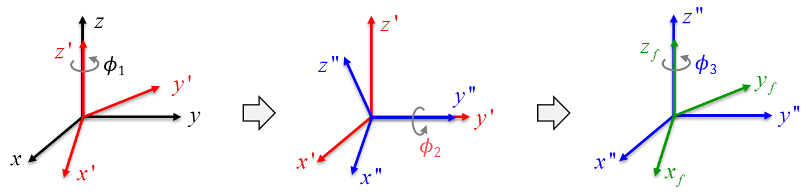
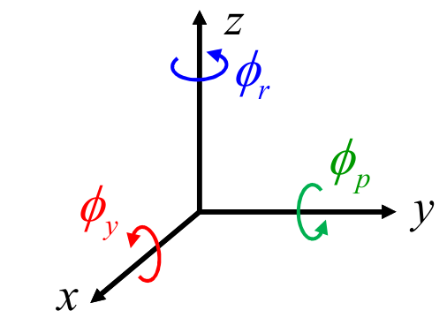
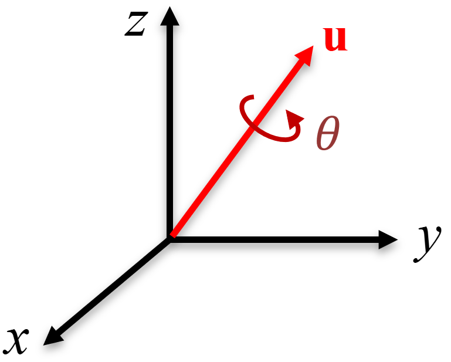
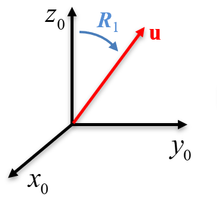
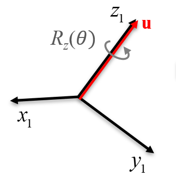
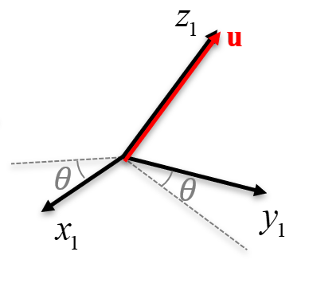
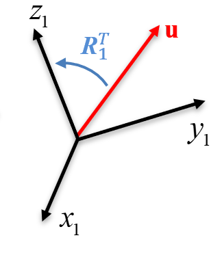
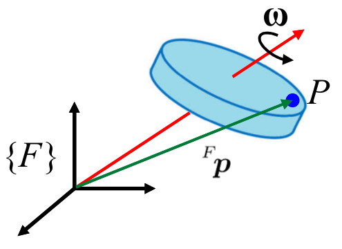

3 Parametrizaciones de la Orientación
\[ \newcommand{\vect}[1]{\boldsymbol{#1}} \newcommand{\x}{\vect{x}} \newcommand{\y}{\vect{y}} \newcommand{\z}{\vect{z}} \newcommand{\e}{\vect{e}} \newcommand{\f}{\vect{f}} \newcommand{\g}{\vect{g}} \newcommand{\G}{\vect{G}} \newcommand{\h}{\vect{h}} \newcommand{\J}{\vect{J}} \newcommand{\n}{\vect{n}} \newcommand{\p}{\vect{p}} \newcommand{\q}{\vect{q}} \newcommand{\s}{\vect{s}} \newcommand{\w}{\vect{w}} \newcommand{\m}{\vect{m}} \renewcommand{\a}{\vect{a}} \renewcommand{\b}{\vect{b}} \renewcommand{\c}{\vect{c}} \renewcommand{\d}{\vect{d}} \renewcommand{\r}{\vect{r}} \renewcommand{\u}{\vect{u}} \renewcommand{\v}{\vect{v}} % Problems? \newcommand{\vv}{\vect{v}} \newcommand{\rr}{\vect{r}} \newcommand{\bv}{\vect{v}} \] \[ \newcommand{\vi}{\vect{i}} \newcommand{\vj}{\vect{j}} \newcommand{\vk}{\vect{k}} \] \[ \newcommand{\bomega}{\vect{\omega}} \newcommand{\bphi}{\vect{\phi}} \newcommand{\bepsilon}{\vect{\epsilon}} \newcommand{\btheta}{\vect{\theta}} \newcommand{\btau}{\vect{\tau}} \newcommand{\bmu}{\vect{\mu}} \newcommand{\bvarphi}{\vect{\varphi}} \newcommand{\bxi}{\vect{\xi}} \] \[ \newcommand{\zeros}{\vect{0}} \] \[ \newcommand{\dq}{\dot {\vect{q}}} \newcommand{\ddq}{\ddot {\vect{q}}} \newcommand{\dx}{\dot {\vect{x}}} \newcommand{\ddx}{\ddot {\vect{x}}} \] \[ \newcommand{\Ja}{{J_{_{\!A}}}} \]
\[ \newcommand{\half}{\frac{1}{2}} \newcommand{\quarter}{\frac{1}{4}} \]
\[ \newcommand{\bm}[1]{\begin{bmatrix}#1\end{bmatrix}} \newcommand{\mat}[1]{\boldsymbol{#1}} \newcommand{\Rot}{\mat{R}} \newcommand{\Tran}{\mat{T}} \newcommand{\tr}{\text{tr}} % For trace \]
\[ \newcommand{\R}{\mathbb{R}} \newcommand{\dt}{\Delta t} \] \[ \renewcommand{\frame}[1]{\{\mathcal{#1}\}} \newcommand{\framen}[1]{\{{#1}\}} \newcommand{\supFrame}[1]{~\!{^{\mathcal{^{_{#1}}\!}}}} \newcommand{\ssr}[2]{{{~\!}^{^{_{\mathcal{#1}}}\!\!}}{\Rot}_{_{\mathcal{#2}}}} \newcommand{\ssrnocal}[2]{{{~\!}^{^{_{#1}}\!\!}}{\Rot}_{_{#2}}} \newcommand{\ssomega}[2]{{^{#1}}{\bomega}_{#2}} \newcommand{\ssv}[3]{{^{^{_{#1}}\!}}{#2}_{_{\!#3}}} \newcommand{\sv}[2]{{^{^{_{#1}}\!}}{#2}} \newcommand{\ssdr}[2]{{^{^{_{#1}}\!\!}}{\dot \Rot}_{_{#2}}} \newcommand{\sst}[2]{{{~\!}^{^{_{\mathcal{#1}}}\!\!}}{\Tran}_{_{\mathcal{#2}}}} \newcommand{\sstnocal}[2]{{^{^{_{#1}}}}{\Tran}_{_{#2}}} \]
\[ \newcommand{\atan}{\text{atan}} \newcommand{\sen}{\text{sen}} \newcommand{\sgn}{\text{sgn}} \newcommand{\fpartial}[2]{\frac{\partial {#1}}{\partial {#2}}} \newcommand{\grad}{^{\circ}} \]
Una matriz de rotación es de tamaño \(3 \times 3\) y, por tanto, posee nueve elementos. Sin embargo, como se vio en la Sección 2.3.4, de dichos nueve elementos solamente tres son independientes, y los otros seis son mutuamente dependientes. Por este motivo, se considera que una matriz de rotación es una representación redundante de la orientación. Debido a que en el espacio tridimensional un cuerpo rígido posee tres grados de libertad para la orientación, se esperaría que se pudiese contar con solo tres elementos para la representación de la orientación y no con los nueve que posee una matriz de rotación. A la representación de la orientación utilizando menos de nueve parámetros se le denomina una parametrización de la rotación o de la orientación, o de manera más formal, una parametrización del espacio generado por \(SO(3)\).
La representación de la orientación, a diferencia de la representación de la posición, no es un problema simple. Uno de los motivos es que, a pesar de que \(SO(3)\) es un espacio tridimensional, tiene la topología de un espacio proyectivo \(\mathbb P^3\), el cual no puede ser mapeado suavemente a \(\R^3\). Esto significa que si se utiliza solamente tres parámetros para su representación existirá algunos problemas en algunos puntos, los cuales son denominados puntos singulares. A estos problemas se denomina singularidades de la representación, ya que varían según la representación que se utilice. Así, existe un compromiso entre la cantidad de parámetros que se utiliza para representar la orientación, y los problemas que puede tener la representación en algunos puntos. Además, dado que las rotaciones no son conmutativas, no se puede utilizar vectores en el sentido convencional para representarlas, ya que no constituyen espacios vectoriales.
Las representaciones que utilizan solamente tres parámetros independientes para la orientación son denominadas representaciones mínimas, como se mencionó en la Sección 1.4.3. En general, una representación mínima del grupo ortogonal especial \(SO(m)\) requiere \(m(m-1)-2\) parámetros, de donde se deduce que se requiere tres parámetros para parameterizar \(SO(3)\), mientras que solo uno para parametrizar las rotaciones en el plano \(SO(2)\). El problema de las representaciones mínimas es que poseen singularidades. Para evitar este problema se puede utilizar representaciones con más parámetros. Este capítulo detalla las parametrizaciones de la orientación más utilizadas en robótica.
3.1 Ángulos de Euler
Una matriz de rotación genérica puede ser obtenida realizando la composición de tres rotaciones elementales, donde cada una de las rotaciones implica el giro de un ángulo \(\phi_i\) alrededor de un eje canónico. Se debe considerar que dos rotaciones sucesivas no pueden ser realizadas sobre ejes paralelos, ya que en dicho caso podrían ser representadas por una sola rotación. A los tres ángulos correspondientes a cada una de estas tres matrices de rotación elementales se les denomina comúnmente ángulos de Euler. De esta manera, una representación mínima de la orientación puede ser obtenida usando un conjunto de tres parámetros \[ \bphi=(\phi_1,\phi_2,\phi_3) \] denominados ángulos de Euler, donde cada parámetro es un ángulo asociado con una matriz de rotación elemental. Debido a esta asociación, los ángulos de Euler no son únicos, ya que dependerán del eje con respecto al cual se realicen las rotaciones elementales. Por convención, cada conjunto de ángulos de Euler se denomina utilizando las letras correspondientes a los ejes canónicos, y asumiendo que las rotaciones se realizan con respecto al sistema actual, a lo que a veces se conoce como rotación intrínseca. En otras palabras, los ángulos de Euler representan rotaciones elementales respecto a los ejes de los sistemas de referencia locales (existe otra convención donde se realiza rotaciones con respecto al sistema fijo, llamada rotación extrínseca, pero no es usual en robótica). Por ejemplo, en los ángulos de Euler YZX, el primer parámetro representa el ángulo de giro alrededor de \(\y\), el segundo parámetro el ángulo alrededor del eje \(\z\) actual, y el tercer parámetro el ángulo de rotación alrededor del eje \(\x\) actual.
Considerando que cada una de las tres rotaciones elementales puede ser realizada alrededor de uno de los tres ejes canónicos (\(\x\), \(\y\), \(\z\)), existen 27 posibles combinaciones de rotaciones. Sin embargo, de todas estas combinaciones se descarta aquellas que tienen dos o más rotaciones consecutivas alrededor de un mismo eje, quedando solo 12 posibles combinaciones, las cuales se dividen usualmente en dos tipos.
- Ángulos de Euler propios o clásicos. Utilizan el mismo eje para la primera y para la tercera rotación: XZX, XYX, YXY, YZY, ZYZ, ZXZ.
- Ángulos de Tait-Bryan. Utilizan diferentes ejes para cada una de las rotaciones, y son: XYZ, XZY, YXZ, YZX, ZXY, ZYX.
Las combinaciones más utilizadas son los ángulos ZYZ, ZYX (llamado ángulos de Fick), YZX (ángulos de Helmholtz) y ZXZ.
Desde un punto de vista matemático, los ángulos de Euler son un ejemplo de una parameterización local de \(SO(3)\), que además es mínima ya que solo posee tres parámetros. Es, además, un resultado topológico fundamental que las singularidades nunca pueden ser eliminadas en cualquier representación tridimensional de \(SO(3)\), ya que no existen soluciones globales o suaves al problema inverso de determinar los ángulos de Euler a partir de una rotación. Por este motivo, la representación de la orientación mediante ángulos de Euler siempre tendrá singularidades, pero los puntos donde surgen las singularidades dependerán del conjunto particular de ángulos que se esté utilizando.
A continuación se analizará con cierto detalle un conjunto específico de ángulos de Euler (los ángulos ZYZ). El mismo procedimiento de análisis puede ser extendido a todos los demás conjuntos de ángulos, pero las expresiones obtenidas serán evidentemente diferentes.
3.1.1 Ángulos de Euler ZYZ
El conjunto de ángulos de Euler ZYZ contiene tres parámetros \((\phi_1,\phi_2,\phi_3)\) que representan la rotación alrededor del eje \(\z\), seguida de la rotación alrededor del eje actual \(\y\), seguida de la rotación alrededor del eje actual \(\z\). De manera más detallada, estos ángulos representan las siguientes rotaciones.

Partiendo de un sistema de referencia, se realiza una rotación de un ángulo \(\phi_1\) alrededor del eje \(\z\), la cual se describe mediante la matriz \(\Rot_z(\phi_1)\). Esta rotación se esquematiza en la Figura 3.1 (izquierda).
El sistema resultante de la rotación anterior es rotado un ángulo \(\phi_2\) alrededor del eje \(\y\) actual (eje rotado), denominado \(\y'\). Esta rotación se describe utilizando la matriz \(\Rot_{y'}(\phi_2)\) y se esquematiza en la Figura 3.1 (centro).
El sistema resultante de la rotación anterior es rotado un ángulo \(\phi_3\) alrededor del eje \(\z\) actual (rotado), denominado \(\z''\). Esta rotación se describe por la matriz \(\Rot_{z''}(\phi_3)\) y se esquematiza en la Figura 3.1 (derecha).
La orientación del sistema resultante se obtiene a partir de la composición de rotaciones y, debido a que cada rotación se especifica con respecto al sistema actual, es necesario realizar post-multiplicaciones sucesivas de las matrices de rotación elementales: \[ \Rot(\bphi) = \Rot_z(\phi_1) \Rot_{y'}(\phi_2) \Rot_{z''}(\phi_3). \] Desarrollando estos productos matriciales elemento a elemento se obtiene que la matriz de rotación equivalente es \[ \Rot(\bphi) = \bm{ c_{\phi_1} c_{\phi_2} c_{\phi_3}-s_{\phi_1}s_{\phi_3} & - s_{\phi_1}c_{\phi_3}-c_{\phi_1}c_{\phi_2}s_{\phi_3} & c_{\phi_1}s_{\phi_2} \\ s_{\phi_1}c_{\phi_2}c_{\phi_3} + c_{\phi_1}s_{\phi_3} & c_{\phi_1}c_{\phi_3} - s_{\phi_1}c_{\phi_2}s_{\phi_3} & s_{\phi_1}s_{\phi_2} \\ -s_{\phi_2}c_{\phi_3} & s_{\phi_2}s_{\phi_3} & c_{\phi_2} }, \tag{3.1}\] donde por conveniencia \(c_{\phi}=\cos(\phi)\), y \(s_{\phi}=\sen(\phi)\). Así, dados los ángulos de Euler ZYZ \((\phi_1, \phi_2, \phi_3)\) se puede obtener la matriz de rotación que describe la misma rotación utilizando Ecuación 3.1.
- Problema inverso
-
El problema inverso consiste en determinar el conjunto de ángulos de Euler dada una matriz de rotación genérica \[ \Rot = \bm{ r_{11} & r_{12} & r_{13} \\ r_{21} & r_{22} & r_{23} \\ r_{31} & r_{32} & r_{33} } \] que es puramente numérica. Para resolver este problema se compara esta expresión numérica de \(\Rot\) con la expresión algebraica dada en Ecuación 3.1, con el fin de despejar los elementos que contienen a los ángulos deseados. Para preservar el cuadrante de los ángulos se prefiere siempre el uso de la función \(\atan2\) (descrita en el Apéndice A.3.1), que es una tangente inversa que considera el cuadrante. En la medida de lo posible se intenta evitar el uso del coseno inverso o del seno inverso, a menos que quede claro los límites que tiene el ángulo que se está utilizando.
Comparando \(\Rot\) con Ecuación 3.1 se puede observar que \(r_{13}^2+r_{23}^2=\sen^2\phi_2\), de donde se puede despejar el valor de \(\sen\phi_2\), obteniéndose dos posibles valores según el signo de la raíz cuadrada. Usando este seno, y la equivalencia \(r_{33}=\cos\phi_2\), el ángulo \(\phi_2\) se obtiene como \[ \phi_2 = \atan2\left( \pm \sqrt{r_{13}^2+r_{23}^2}, r_{33} \right). \tag{3.2}\] Existen dos posibles soluciones para \(\phi_2\) dependiendo de si se toma la raiz cuadrada con signo positivo o negativo. La elección del signo positivo para el término conteniendo la raíz cuadrada limita el rango de posibles valores de \(\phi_2\) a \((0,\pi)\), ya que el seno (primer argumento de \(\atan2\)) es positivo en los cuadrantes I y II, y la elección del signo negativo limita \(\phi_2\) a valores de \(-\pi\) a \(0\), ya que el seno es negativo en los cuadrantes III y IV. Una vez calculado \(\phi_2\), asumiendo que \(\sen\phi_2\neq 0\), se puede usar el hecho que \(r_{23}/\sen\phi_2 = \sen\phi_1\) y \(r_{13}/\sen\phi_2=\cos\phi_1\) para calcular \(\phi_1\) como \[ \phi_1 = \atan2\left(\frac{r_{23}}{\sen\phi_2},\frac{r_{13}}{\sen\phi_2}\right). \tag{3.3}\] De igual manera, siempre que \(\sen\phi_2\neq 0\), se obtiene el ángulo \(\phi_3\), con las observaciones que \(r_{32}/\sen\phi_2=\sen\phi_3\) y \(r_{31}/\sen\phi_2=-\cos\phi_3\), llegando a: \[ \phi_3 = \atan2\left(\frac{r_{32}}{\sen\phi_2},-\frac{r_{31}}{\sen\phi_2}\right). \tag{3.4}\] Notar que dado que existen dos posibles soluciones para \(\phi_2\), en general existirán dos conjuntos solución para \(\phi_1\) y \(\phi_3\) dependiendo del valor de \(\phi_2\) que se haya escogido.
- Singularidades de la Representación
-
Para el cálculo de \(\phi_1\) y \(\phi_3\) se realizó la suposición que \(\sen\phi_2\neq 0\), lo cual lleva a excluir valores de \(\phi_2\) donde \(\phi_2 = k\pi\), con \(k \in \mathbb Z\). Cuando \(\phi_2=k\pi\), no es posible encontrar un conjunto solución para los ángulos de Euler ZYZ, ya que \(\phi_1\) y \(\phi_3\) se encuentran mal definidos en dichos valores debido a una división entre cero. Por este motivo, se dice que la representación de Euler ZYZ presenta singularidades de representación en \(\phi_2 = k\pi\). Esto es una consecuencia de que toda representación mínima no cubre por completo todo el espacio SO(3) y presenta singularidades de representación.
Debido a que no es posible reemplazar el valor de \(\phi_2=k\pi\) (la singularidad) en Ecuación 3.3 ni en Ecuación 3.4, pues \(\sen\phi_2=0\), es necesario obtener la matriz de rotación equivalente considerando estos valores específicos de \(\phi_2\). Cuando \(k\) es par, la matriz de rotación es \(\Rot_z(\phi_1) \Rot_{y'}(0) \Rot_{z''}(\phi_3)\), con \(\sen\phi_2=0\) y \(\cos\phi_2=1\), y la matriz en Ecuación 3.1 se convierte en \[ \Rot(\bphi) = \bm{ c_{\phi_1} c_{\phi_3}-s_{\phi_1}s_{\phi_3} & - s_{\phi_1}c_{\phi_3}-c_{\phi_1}s_{\phi_3} & 0 \\ s_{\phi_1}c_{\phi_3} + c_{\phi_1}s_{\phi_3} & c_{\phi_1}c_{\phi_3} - s_{\phi_1}s_{\phi_3} & 0 \\ 0 & 0 & 1} = \bm{ c_{\phi_1+\phi_3} & -s_{\phi_1+\phi_3} & 0 \\ s_{\phi_1+\phi_3} & c_{\phi_1+\phi_3} & 0 \\ 0 & 0 & 1}, \] donde \(c_{\phi_1+\phi_3}=\cos(\phi_1+\phi_3)\) y \(s_{\phi_1+\phi_3}=\sen(\phi_1+\phi_3)\). En este caso la rotación se reduce a una rotación alrededor de \(\z\) y solo es posible obtener la suma \(\phi_1+\phi_3\), mas no cada ángulo por separado. Esto se debe a que la secuencia de rotaciones se realiza alrededor de \(\z\) luego \(\y\), luego \(\z\), y si el ángulo alrededor de \(\y\) es nulo, se tiene dos rotaciones consecutivas alrededor del mismo eje \(\z\), no pudiéndose distinguir entre la primera y la tercera rotación aplicadas. Por otro lado, cuando \(k\) es impar la matriz de rotación equivalente es \(\Rot_z(\phi_1) \Rot_{y'}(\pi) \Rot_{z''}(\phi_3)\), con \(\sen \phi_2=0\) y \(\cos\phi_2=-1\). Así, la matriz Ecuación 3.1 se convierte en \[ \Rot(\bphi) = \bm{ -c_{\phi_1} c_{\phi_3}-s_{\phi_1}s_{\phi_3} & - s_{\phi_1}c_{\phi_3}+c_{\phi_1}s_{\phi_3} & 0 \\ -s_{\phi_1}c_{\phi_3} + c_{\phi_1}s_{\phi_3} & c_{\phi_1}c_{\phi_3} + s_{\phi_1}s_{\phi_3} & 0 \\ 0 & 0 & -1} = \bm{ -c_{\phi_3-\phi_1} & s_{\phi_3-\phi_1} & 0 \\ s_{\phi_3-\phi_1} & c_{\phi_3-\phi_1} & 0 \\ 0 & 0 & -1}, \] donde \(c_{\phi_3-\phi_1}=\cos(\phi_3-\phi_1)\) y \(s_{\phi_3-\phi_1}=\sen(\phi_3-\phi_1)\). En este caso solo se puede obtener la diferencia de los ángulos \(\phi_3-\phi_1\) pero no se puede recuperar el valor de cada ángulo \(\phi_1\), \(\phi_3\) por separado. Este resultado también es fácilmente interpretable ya que el giro de 180\(^{\circ}\) alrededor del eje \(\y\) hace que la tercera rotación se realice alrededor del eje \(\z\) inicial pero con dirección opuesta (y de allí el signo negativo).
Una observación adicional de los ángulos de Euler ZYZ es que, si se tiene los ángulos \(\phi_1=\alpha\), \(\phi_2=0\), \(\phi_3=-\alpha\), con \(\alpha \in \mathbb R\), la matriz de rotación resultante en Ecuación 3.1 es \(\Rot(\alpha,0,-\alpha)=I\). Esto muestra que existen infinitas representaciones de la identidad de rotación (cualquier valor de \(\alpha\) anterior) cuando se utiliza la parameterización ZYZ de los ángulos de Euler.
3.1.2 Otros ángulos de Euler
Como se mencionó anteriormente, existen en total 12 posibles ángulos de Euler, siendo el caso anterior una de estas posibilidades. El análisis de los otros ángulos de Euler es similar al desarrollado para los ángulos ZYZ: se calcula la matriz de rotación equivalente a los tres ángulos (similar a Ecuación 3.1 pero usando la definición específica de ejes asociada a los ángulos utilizados), y se resuelve el problema inverso haciendo uso, en la medida de lo posible, de la función \(\atan2\) para encontrar cada ángulo. Se debe tener especial cuidado al sacar las raíces cuadradas ya que suelen llevar a dos posibles soluciones. De igual manera, el análisis de singularidades se realiza considerando aquellos valores que producen resultados indefinidos. Es importante notar que los valores en los cuales se producen las singularidades son, en general, diferentes para diferentes ángulos de Euler. Por ejemplo, a diferencia de los ángulos ZYZ, tanto los ángulos de Euler ZYX como los ángulos YZX no poseen singularidades en la identidad.
3.2 Ángulos Roll, Pitch, Yaw (angulos de Euler ZYX)
Estos ángulos, llamados también ángulos náuticos o ángulos de Cardán, se originan a partir de la representación de la orientación en el campo aeronáutico, e históricamente describen los cambios típicos de altitud de una aeronave representados mediante rotaciones definidas con respecto a ejes fijos que se encuentran en el centro de masa de la aeronave. En español se les denomina ángulos de alabeo, cabeceo y guiñada, pero debido a que los términos en inglés roll, pitch, yaw son bastante utilizados en robótica, en este libro se hará uso de ellos. Por claridad de notación, este conjunto de ángulos será representado como \[ \bphi=(\phi_r,\phi_p,\phi_y) \] donde \(\phi_r\) es el ángulo de roll, \(\phi_p\) el ángulo de pitch, y \(\phi_y\) el ángulo de yaw. Al igual que con los ángulos de Euler, estos ángulos se encuentran ligados cada uno a una matriz de rotación, y los tres ángulos forman una composición de tres matrices de rotación, pero en este caso las rotaciones se realizan siempre con respecto al sistema de referencia fijo, como se esquematiza en la Figura 3.2. La definición concreta de estos ángulos es la siguiente.

Dado un sistema de referencia inercial, primero se rota este sistema un ángulo \(\phi_y\) (yaw) alrededor del eje \(\x\). Esta rotación se describe por la matriz \(\Rot_x(\phi_y)\).
Luego se rota el sistema resultante un ángulo \(\phi_p\) (pitch) alrededor del eje \(\y\) fijo. Esta rotación se describe por la matriz \(\Rot_y(\phi_p)\).
Finalmente, se rota el sistema resultante un ángulo \(\phi_r\) (roll) alrededor del eje \(\z\). Esta rotación se describe por la matriz \(\Rot_z(\phi_r)\).
La matriz de rotación equivalente se puede obtener mediante la composición de las rotaciones anteriores. Debido a que todas las rotaciones sucesivas se aplican con respecto al sistema fijo, es necesario realizar pre-multiplicaciones (multiplicaciones por la izquierda) en cada caso. De esta manera se obtiene que la rotación equivalente a los ángulos de roll, pitch, yaw es \[ \Rot(\bphi) = \Rot_z(\phi_r) \Rot_{y}(\phi_p) \Rot_{x}(\phi_y). \] De manera equivalente, el orden de la multiplicación puede también ser interpretado en sentido inverso: primero aplicar una rotación alrededor del eje \(\z\), luego una rotación alrededor del eje actual \(\y\) y finalmente una rotación alrededor del eje actual \(\x\). Con esta interpretación, los ángulos de roll, pitch, yaw son exactamente equivalentes a los ángulos de Euler ZYX. Desarrollando término a término el producto de la composición de las rotaciones anteriores se llega a \[ \Rot(\bphi) = \bm{ c_{\phi_r}c_{\phi_p} & c_{\phi_r}s_{\phi_p}s_{\phi_y}-s_{\phi_r}c_{\phi_y} & c_{\phi_r}s_{\phi_p}c_{\phi_y} + s_{\phi_r}s_{\phi_y} \\ s_{\phi_r}c_{\phi_p} & s_{\phi_r}s_{\phi_p}s_{\phi_y} + c_{\phi_r}c_{\phi_y} & s_{\phi_r}s_{\phi_p}c_{\phi_y}-c_{\phi_r}s_{\phi_y} \\ -s_{\phi_p} & c_{\phi_p}s_{\phi_y} & c_{\phi_p}c_{\phi_y} }. \tag{3.5}\]
Utilizando Ecuación 3.5 se obtiene la matriz de rotación equivalente dados un conjunto de ángulos roll, pitch, yaw.
- Orden de las rotaciones
-
Es importante tener en cuenta que el orden descrito para las rotaciones es el orden clásico, y se adecúa a la descripción de la orientación del efector final de un manipulador. Sin embargo, no es la única definición existente: en algunos casos se definen las rotaciones intercambiando el eje \(\z\) con el eje \(\x\), como si se tratase de ángulos de Euler XYZ. Esto es usual en robots móviles donde el eje \(\x\) se define hacia adelante del robot y el eje \(\z\) apunta hacia arriba, de tal modo que el ángulo roll es el giro alrededor del eje \(\x\) y el ángulo yaw es el giro alrededor del eje \(\z\). En otros casos, inclusive, se realiza la misma definición anterior (Euler ZYX), pero se intercambia de nombre a los ángulos roll con yaw. En general, en robótica no existe un consenso sobre qué estándar tomar al referirse a ángulos roll, pitch, yaw, así que se debe tener especial cuidado con tener el orden de rotaciones y los nombres de los ángulos claros cuando se trabaje con esta parametrización, ya que de otro modo se obtendrá resultados erróneos a pesar de tener cálculos aparentemente correctos. A lo largo de este libro, a menos que se mencione lo contrario, se utilizará la definición dada en esta sección para este conjunto de ángulos.
- Problema inverso
-
Al igual que para los ángulos de Euler ZYZ, el problema inverso consiste en determinar los ángulos roll, pitch, yaw dada una matriz numérica que representa una rotación genérica \[ \Rot = \bm{ r_{11} & r_{12} & r_{13} \\ r_{21} & r_{22} & r_{23} \\ r_{31} & r_{32} & r_{33} }. \] La solución a este problema se basa en comparar esta matriz \(\Rot\) numérica con la expresión algebraica dada en Ecuación 3.5. Realizando esta comparación se puede observar que \(r_{32}^2+r_{33}^2=\cos^2\phi_p\), y que \(r_{31}=-\sen\phi_p\). Tomando la raiz cuadrada de \(\cos^2\phi_p\) y usando \(\sen\phi_p\) se puede generar la tangente de \(\phi_p\), que se despeja como \[ \phi_p = \atan2\left(-r_{31}, \pm \sqrt{r_{32}^2+r_{33}^2} \right), \tag{3.6}\] donde se tiene dos posibles signos para la raíz cuadrada, y por tanto dos posibles soluciones. Cuando se desea que \(\phi_p\) esté en el rango \((-\frac{\pi}{2},\frac{\pi}{2})\) se utiliza el valor positivo, ya que en este caso el coseno (segundo argumento de \(\atan2\)) es positivo en los cuadrantes IV y I, y cuando se desea que esté en el rango \((\frac{\pi}{2},\frac{3\pi}{2})\) se usa el valor negativo, ya que el coseno es negativo en los cuadrantes II y III. Notar que, al igual que con cualquier conjunto de ángulos de Euler, existen en general dos soluciones. El ángulo \(\phi_r\), suponiendo \(\cos\phi_p \neq 0\), se obtiene como \[ \phi_r = \atan2\left(\frac{r_{21}}{\cos\phi_p},\frac{r_{11}}{\cos\phi_p}\right) \tag{3.7}\] y finalmente el ángulo \(\phi_y\) como \[ \phi_y = \atan2\left(\frac{r_{32}}{\cos\phi_p},\frac{r_{33}}{\cos\phi_p}\right). \tag{3.8}\] Dependiendo del signo que se haya escogido para la raíz cuadrada en Ecuación 3.6, se tendrá dos pares de soluciones exactamente equivalentes. El hecho de escoger una u otra solución depende del rango en el cual se desea que esté \(\phi_p\).
- Singularidades de la Representación
-
Para estos ángulos la singularidad de la representación se obtiene cuando \(\cos\phi_p=0\), ya que en dicho caso los ángulos \(\phi_r, \phi_y\) dados en Ecuación 3.7 y Ecuación 3.8 no se encuentran bien definidos. Esta singularidad se presenta cuando \(\phi_p= k \frac{\pi}{2}\), con \(k\in\mathbb Z\) sin incluir el cero. Cuando \(\phi_p=\frac{\pi}{2}\), se tiene la matriz de rotación \(\Rot(\bphi) = \Rot_z(\phi_r) \Rot_{y}(\frac{\pi}{2}) \Rot_{x}(\phi_y)\), con \(\cos\phi_p=0\) y \(\sen\phi_p= 1\). En este caso, Ecuación 3.5 se convierte en \[ \Rot(\bphi) = \bm{ 0 & c_{\phi_r}s_{\phi_y}-s_{\phi_r}c_{\phi_y} & c_{\phi_r}c_{\phi_y} + s_{\phi_r}s_{\phi_y} \\ 0 & s_{\phi_r}s_{\phi_y} + c_{\phi_r}c_{\phi_y} & s_{\phi_r}c_{\phi_y}-c_{\phi_r}s_{\phi_y} \\ -1 & 0 & 0 } = \bm{ 0 & -s_{\phi_r-\phi_y} & c_{\phi_r-\phi_y} \\ 0 & c_{\phi_r-\phi_y} & s_{\phi_r-\phi_y} \\ -1 & 0 & 0 }, \] donde \(c_{\phi_r-\phi_y} = \cos({\phi_r-\phi_y})\) y \(s_{\phi_r-\phi_y} = \sen({\phi_r-\phi_y})\). Como se observa, solo es posible determinar la diferencia de los ángulos \(\phi_r-\phi_y\), pero no el valor de cada ángulo por separado. Por otro lado, cuando \(\phi_2=-\frac{\pi}{2}\), se tiene la rotación \(\Rot_z(\phi_r) \Rot_{y}(-\frac{\pi}{2}) \Rot_{x}(\phi_y)\), con \(\cos\phi_p=0\), \(\sen\phi_p= -1\), y \[ \Rot(\bphi) = \bm{ 0 & -c_{\phi_r}s_{\phi_y}-s_{\phi_r}c_{\phi_y} & -c_{\phi_r}c_{\phi_y} + s_{\phi_r}s_{\phi_y} \\ 0 & -s_{\phi_r}s_{\phi_y} + c_{\phi_r}c_{\phi_y} & -s_{\phi_r}c_{\phi_y}-c_{\phi_r}s_{\phi_y} \\ 1 & 0 & 0 } = \bm{ 0 & -s_{\phi_r+\phi_y} & -c_{\phi_r+\phi_y} \\ 0 & c_{\phi_r+\phi_y} & -s_{\phi_r+\phi_y} \\ 1 & 0 & 0 }, \] donde \(c_{\phi_r+\phi_y} = \cos({\phi_r+\phi_y})\) y \(s_{\phi_r+\phi_y} = \sen({\phi_r+\phi_y})\). En este caso solo es posible determinar la suma de los ángulos \(\phi_r+\phi_y\), pero no es posible encontrar cada ángulo por separado.
3.3 Parametrización de Eje y Ángulo
Toda rotación, por muy compleja que sea, puede ser descrita como el giro de un ángulo \(\theta\) alrededor de un determinado eje \(\u\), como se esquematiza en la Figura 3.3. A esta representación de una rotación mediante un ángulo \(\theta\) y un eje \(\u\) se le denomina parametrización eje-ángulo. La justificación de esta parametrización se basa en el denominado teorema de rotación de Euler, el cual establece que, en el espacio tridimensional, cualquier desplazamiento de un cuerpo rígido tal que un punto en el cuerpo rígido se mantiene fijo, es equivalente a una sola rotación alrededor de un eje que pasa por dicho punto fijo.

3.3.1 Matriz de Rotación Equivalente
La relación existente entre una matriz de rotación y la parametrización eje-ángulo puede ser deducida de diversas maneras, utilizando argumentos geométricos, algebraicos o proyecciones. A continuación, y por facilidad de presentación, se realizará una derivación algebraica.
Considérese una rotación de un ángulo \(\theta\) alrededor de un eje unitario \(\u\), el cual es arbitrario y cumple \(\Vert \u\Vert = 1\). Debido a que no se conoce el eje, se obtendrá la matriz de rotación equivalente \(\Rot(\theta,\u)\) de manera indirecta. Con este fin se seguirá los siguientes pasos, esquematizados en la Figura 3.4, iniciando con un sistema de referencia descrito por los ejes \(\x_0, \y_0, \z_0\).




Primero se aplicará una rotación \(\Rot_1\) al sistema de referencia inicial (Figura 3.4 (a)), la cual hará que el eje \(\z\) de este sistema quede alineado con el eje de giro \(\u\).
Luego se realizará la rotación del ángulo \(\theta\) alrededor del eje \(\z\) local, \(\Rot_z(\theta)\), ya que este eje se encuentra ahora alineado con el eje unitario de interés \(\u\) (Figura 3.4 (b)). La rotación resultante hasta este punto es: \(\Rot_1 \Rot_z(\theta)\) (Figura 3.4 (c)).
Finalmente, luego de aplicada la rotación del ángulo \(\theta\) deseado, se “deshace” o “invierte” la rotación inicial aplicando la inversa \(\Rot_1^{-1}\) al sistema local (Figura 3.4 (d)), siendo la rotación resultante: \(\Rot_1 \Rot_z(\theta)\Rot_1^{-1}\).
Puesto que en una matriz de rotación la inversa es igual a la transpuesta, estos tres pasos se pueden escribir como \[ \Rot(\theta,\u) = \Rot_1 \Rot_z(\theta) \Rot_1^T, \] donde \(\Rot(\theta,\u)\) es la matriz de rotación equivalente deseada. La estructura de \(\Rot_z(\theta)\) está dada por Ecuación 2.4 ya que es una rotación canónica, así que el problema consiste en determinar la estructura de la matriz \(\Rot_1\). Debido a que \(\Rot_1\) alinea el eje \(\z\) inicial con el eje \(\u\), la tercera columna de esta matriz describe las coordenadas de \(\u\) en el sistema inicial. Dicho de otra manera, luego de aplicar la rotación, el nuevo eje \(\z\) tiene como coordenadas a \(\u\) con respecto al sistema inicial. Por tanto, la estructura de \(\Rot_1\) será \[ \Rot_1 = \bm{\vect{n} & \vect{s} & \u}, \] donde \(\vect n, \vect s, \u\) son vectores columna que describen la orientación de los ejes canónicos rotados, con respecto al sistema inicial. En dicha matriz se conoce el valor de \(\u\) pero se desconoce los valores de \(\n\) y de \(\s\). Reemplazando esta estructura en la expresión anterior de \(\Rot(\theta,\u)\), y utilizando la expresión de la rotación en \(\z\), se tiene \[ \Rot(\theta,\u) = \bm{\vect{n} & \vect{s} & \u} \bm{\cos(\theta) & -\sen(\theta) & 0 \\ \sen(\theta) & \cos(\theta) & 0 \\ 0 & 0 & 1} \bm{\vect{n}^T \\ \vect{s}^T \\ \u^T}. \]
Se puede fácilmente realizar la multiplicación término a término de estas matrices, sin necesidad de expandir los componentes de \(\n\), \(\s\) o \(\u\), ya que los tamaños de los vectores fila y columna son coherentes. El producto resultante es \[ \begin{align*} \Rot(\theta,\u) & = \cos(\theta) \n\n^T - \sen(\theta) \n\s^T + \sen(\theta) \s \n^T + \cos(\theta) \s \s^T + \u\u^T \\ & = \u\u^T + (\n\n^T+\s\s^T)\cos(\theta) + (\s\n^T-\n\s^T)\sen(\theta). \end{align*} \] El problema de la expresión anterior es que contiene los vectores \(\vect n\) y \(\vect s\), los cuales son desconocidos. Para resolver este problema se puede usar el hecho que \(\Rot_1\Rot_1^T=\n\n^T+\s\s^T+\u\u^T=I\), de donde \(\n\n^T+\s\s^T=I-\u\u^T\). Además, debido a que \(\Rot_1\) es una matriz de rotación y sus columnas representan sus ejes, se cumple que \(\n \times \s = \u\). Con base en esta última propiedad, se puede demostrar, desarrollando explícitamente cada uno de los términos, que \(\s\n^T-\n\s^T=\hat\u\), donde dado un vector \(\u=(u_x,u_y,u_z)\), la matriz \(\hat\u\) (también representada como \(\u^{\wedge}\)) se denomina matriz antisimétrica (skew-symmetric) asociada con \(\u\) y se define como \[ \hat\u = \bm{0 & -u_z & u_y \\ u_z & 0 & -u_x \\ -u_y & u_x & 0} \tag{3.9}\] (en realidad, el resultado \((\n \times \s)^{\wedge}=s\n^T-\n\s^T\) se conoce como el corchete de Lie de la rotación infinitesimal). Utilizando estas equivalencias, la matriz de rotación equivalente a la rotación arbitraria de \(\theta\) alrededor del eje unitario \(\u\) queda dada por \[ \Rot(\theta,\u) = \u\u^T + (I-\u\u^T)\cos(\theta) + \hat \u \sen(\theta). \tag{3.10}\] Esta expresión puede ser rescrita utilizando la propiedad \(\u\u^T=\hat\u^2+I\), la cual puede ser fácilmente verificada mediante cálculo directo término a término. Así, se tiene \[ \Rot(\theta,\u) = (\hat\u^2+I) + (I-\hat\u^2-I) \cos(\theta) + \hat \u \sen(\theta), \] que, agrupando términos, puede ser escrito como \[ \Rot(\theta,\u) = I + \hat \u \sen(\theta) + \hat\u^2 (1-\cos(\theta)). \tag{3.11}\] La expresión Ecuación 3.11 se denomina fórmula de Rodrigues. En general, se puede utilizar tanto Ecuación 3.10 como Ecuación 3.11 para el cálculo de la matriz de rotación equivalente a una rotación de un ángulo \(\theta\) alrededor de un eje unitario \(\u=(u_x,u_y,u_z)\). De manera explícita, operando término a término, la matriz \(\Rot(\theta,\u)\) queda definida como \[ \Rot(\theta,\u) = \bm{ u_x^2 v_{\theta} + c_{\theta} & u_xu_y v_{\theta} - u_z s_{\theta} & u_xu_z v_{\theta} + u_y s_{\theta} \\ u_x u_y v_{\theta} + u_z s_{\theta} & u_y^2 v_{\theta} + c_{\theta} & u_y u_z v_{\theta} - u_x s_{\theta} \\ u_x u_z v_{\theta} - u_y s_{\theta} & u_y u_z v_{\theta} + u_x s_{\theta} & u_z^2 v_{\theta} + c_{\theta} }, \tag{3.12}\] donde las abreviaciones utilizadas por conveniencia son \(c_{\theta} = \cos(\theta)\), \(s_{\theta} = \sen(\theta)\), y la función verseno es \(v_{\theta} = \text{versen}(\theta) = 1-\cos(\theta)\).
3.3.2 Problema Inverso
El problema inverso consiste en encontrar el vector unitario \(\u=(u_x,u_y,u_z)\) y el escalar \(\theta\) tal que el efecto de rotar el ángulo \(\theta\) alrededor de \(\u\) sea equivalente al efecto de aplicar una matriz de rotación dada. Considérese una matriz de rotación numérica \(\Rot \in SO(3)\) tal que los elementos de \(\Rot\) son \[ \Rot = \begin{bmatrix} r_{11} & r_{12} & r_{13} \\ r_{21} & r_{22} & r_{23} \\ r_{31} & r_{32} & r_{33} \end{bmatrix}. \] Comparando esta matriz con Ecuación 3.12 se puede resolver el problema inverso. Por inspección, se puede observar que \(r_{32}-r_{23}=2 u_x\sen\theta\), que \(r_{13}-r_{31}=2 u_y\sen\theta\), y que \(r_{21}-r_{12}=2 u_z\sen\theta\). Despejando \(u_x\), \(u_y\) y \(u_z\) de estas expresiones, y agrupando los términos en forma de vector, se obtiene el vector \(\u\) como \[ \u = \bm{u_x \\ u_y \\ u_z} = \dfrac{1}{2\sen(\theta)} \begin{bmatrix} {r_{32}-r_{23}} \\ {r_{13}-r_{31}} \\ {r_{21}-r_{12}}\end{bmatrix}, \tag{3.13}\] donde se debe tener \(\sen(\theta) \neq 0\) para evitar indeterminaciones.
Para encontrar el ángulo \(\theta\), es recomendable utilizar la función \(\text{atan2}\), para lo cual es necesario encontrar primero \(\sen(\theta)\) y \(\cos(\theta)\). Se puede observar que la traza de \(\Rot\) es \(\text{tr}\Rot = \text{versen}{\theta}+3\cos{\theta}=1+2\cos{\theta}\), de donde se obtiene \(\cos(\theta)=\frac{\text{tr}\Rot-1}{2}\). Se observa además que \((r_{21}-r_{12})^2+(r_{31}-r_{13})^2+(r_{32}-r_{23})^2 = 4 \sen^2(\theta)\), de donde se puede despejar el seno. Usando estas dos expresiones se obtiene la tangente y por tanto el arcotangente como \[ \theta = \atan2 \left( \dfrac{\pm \sqrt{(r_{21}-r_{12})^2+(r_{31}-r_{13})^2+(r_{32}-r_{23})^2}}{2}, \dfrac{\text{tr} \Rot-1}{2}\right). \tag{3.14}\] Cuando se toma la raíz positiva, se tendrá \(\theta \in [0,\pi)\), y cuando se tome el signo negativo de la raíz se tendrá \(\theta \in (-\pi,0)\). Usando este ángulo se calcula el eje respectivo en Ecuación 3.13. Tener en cuenta que siempre se tendrá dos posibles soluciones, por lo que la representación eje-ángulo (a veces denominada representación equivalente de eje) no es única. De hecho, usando Ecuación 3.14 y Ecuación 3.13 es posible verificar que \[ \Rot(\theta, \u) = \Rot(-\theta, -\u). \tag{3.15}\] Un detalle adicional es que se puede multiplicar el eje unitario \(\u\) con el ángulo \(\theta\) para obtener el vector no unitario \(\rr=\u\theta\). Así, usando el vector de tres parámetros \(\rr=\u\theta\) se puede representar el eje-ángulo con solamente tres valores, por lo que esta representación es mínima. Si se tiene el vector \(\rr\), el ángulo se recupera fácilmente como \(\theta=\vert \rr \vert\), y el eje unitario como \(\u = \frac{\rr}{\Vert \rr \Vert}\).
3.3.3 Propiedades de la rotación genérica
La matriz de rotación genérica \(\Rot(\theta,\u)\) que describe un giro de \(\theta\) alrededor del eje unitario \(\u\) tiene las siguientes propiedades:
El eje de rotación \(\u\) es invariante a la rotación: \(\Rot(\theta,\u)\u = \u\). Esto se puede fácilmente probar multiplicando Ecuación 3.11 con \(\u\) y usando el hecho que el producto cruz de un vector consigo mismo es nulo.
Cuando \(\u\) es uno de los ejes coordenados, \(\Rot\) se convierte en una de las rotaciones canónicas dadas por Ecuación 2.2, Ecuación 2.3 y Ecuación 2.4.
Siempre hay dos rotaciones equivalentes: \(\Rot(\theta, \u) = \Rot(-\theta, -\u)\). Esto implica que el mapa \((\theta,\u) \rightarrow \Rot\) no es inyectivo; es decir, dos elementos del dominio, \((\theta,\u)\) y \((-\theta,-\u)\) mapearán al mismo elemento del codominio.
Los autovalores de cualquier matriz de rotación \(\Rot\) son \(1\), \(e^{i\theta}\), \(e^{-i\theta}\), y se encuentran en un círculo unitario en el plano complejo.
Esta última propiedad se puede probar como sigue. A partir de la primera propiedad, que establece \(\Rot(\theta,\u)\u = 1 \u\), se observa que \(\u\) es un autovector de \(\Rot\), siendo \(\lambda_1=1\) su autovalor asociado. Por propiedad de matrices se tiene que el determinante de una matriz es igual al producto de sus autovalores, por lo que \(\lambda_2\lambda_3=+1\). Igualmente, para toda matriz se cumple que la traza es la suma de los autovalores, es decir \(\tr(\Rot) = 1+2\cos(\theta)=1+\lambda_2+\lambda_3\). Reemplazando \(\lambda_3=\frac{1}{\lambda_2}\) en esta expresión se llega a \(\lambda_2^2-2\cos(\theta) \lambda_2 +1 = 0\). Resolviendo esta ecuación se tiene \(\lambda_{2,3} = \cos(\theta) \pm \sqrt{\cos^2(\theta)-1} = \cos(\theta) \pm i \sen(\theta)= e^{\pm i \theta}\).
3.3.4 Singularidades
Como se observa en Ecuación 3.13, esta representación presenta una singularidad cuando \(\sen(\theta)=0\). Así, las singularidades ocurren cuando \(\theta=k\pi\), con \(k \in \mathbb Z\). Cuando \(\theta=0\) el ángulo de rotación es nulo, y por tanto no existe, en realidad, rotación. Esto se verifica ya que con \(\theta=0\) se tiene \(\Rot=I\), en Ecuación 3.11. Entonces, en este caso, el eje \(\u\) puede ser escogido de manera arbitraria.
Por otro lado, cuando \(\theta = \pi\), se tiene \(\Rot=I+2 \hat\u^2\), reemplazando en Ecuación 3.11, o de manera equivalente, \(\Rot=-I+2\u\u^T\) reemplazando en Ecuación 3.10. La segunda expresión resulta más fácil de interpretar ya que se trata del doble del producto exterior del eje unitario de giro menos la matriz identidad. Esto se puede verificar reemplazando \(\sen(\theta)=0\), \(\cos(\theta)=-1\) \(\operatorname{versen}(\theta)=2\) en Ecuación 3.12, llegando a \[ \Rot(\pi,\u) = \bm{ 2u_x^2 -1 & 2u_xu_y & 2u_xu_z \\ 2u_x u_y & 2u_y^2 -1 & 2u_y u_z \\ 2 u_x u_z & 2 u_y u_z & 2u_z^2 -1 }. \] A partir de esta expresión, los componentes del eje se obtienen a partir de la diagonal principal como: \[ \begin{align*} u_x &= \pm \sqrt{\half (r_{11}+1)}, \\ u_y &= \pm \sqrt{\half (r_{22}+1)}, \\ u_z &= \pm \sqrt{\half (r_{33}+1)}, \end{align*} \tag{3.16}\] donde cada elemento tiene dos posibles signos. Sin embargo, las posibles combinaciones se reducen a solamente dos posibilidades utilizando las siguientes relaciones que se obtienen a partir de los elementos fuera de la diagonal principal: \[ u_x u_y = \frac{r_{12}}{2}, \qquad u_x u_z = \frac{r_{13}}{2}, \qquad u_y u_z = \frac{r_{23}}{2}. \tag{3.17}\] Estas expresiones permiten obtener los signos correctos para \(u_x, u_y, u_z\). Se puede, además, notar que siempre habrá dos soluciones de signo opuesto.
3.4 Cuaterniones Unitarios
En robótica es cada vez más común representar la orientación de los cuerpos rígidos que forman parte de un robot a través de cuaterniones unitarios, los cuales son un caso particular de los cuaterniones.
- Cuaterniones
-
Un cuaternión \(Q \in \mathbb Q\), también llamado cuaternio, es una tupla de cuatro elementos reales, con operaciones de adición y multiplicación, que se representa como \[ Q = (w,\epsilon_x,\epsilon_y,\epsilon_z),\qquad \text{o} \qquad Q = w+\epsilon_x \vi + \epsilon_y \vj + \epsilon_z\vk, \] donde \(w,\epsilon_x,\epsilon_y,\epsilon_z \in \R\), y los elementos \(\vi\), \(\vj\), \(\vk\) son componentes de la base de los cuaterniones. El término \(w\) es el componente escalar de \(Q\), y el término \(\bepsilon=(\epsilon_x,\epsilon_y,\epsilon_z)\) constituye su componente vectorial, de tal modo que el cuaternión \(Q\) puede también representarse como \[ Q = (w,\bepsilon), \qquad \text{o} \qquad Q = w+\bepsilon, \] con \(w \in \R\) y \(\bepsilon \in \R^3\). Debido a que \(\bepsilon\) es el componente vectorial, al representar el cuaternión como una suma de componentes, sus elementos \(\epsilon_x,\epsilon_y,\epsilon_z\) utilizan la base \(\vi,\vj,\vk\) para ser claramente distinguidos del término escalar, que tiene base \(1\). Es usual representar como \(\mathbb Q\) al espacio de todos los cuaterniones. Más detalles sobre cuaterniones y sus operaciones se puede encontrar en el apéndice B.
Al representar un cuaternión como una tupla de cuatro elementos, es importante conocer el orden de estos elementos, ya que no existe una convención establecida. En este libro se utiliza la convención mostrada; es decir, primero el término escalar y luego los términos vectoriales. Sin embargo, algunas convenciones y paquetes de software, sin pérdida de generalidad, hacen lo contrario, y el no tener claro este orden es una fuente frecuente de errores, principalmente al utilizar bibliotecas para la implementación.
- Cuaterniones unitarios
-
Los cuaterniones unitarios, cuyos elementos se conocen como parámetros de Euler, son el subconjunto de todos los cuaterniones \(Q \in \mathbb Q\) tales que su magnitud es unitaria; es decir \[ \Vert Q \Vert = 1, \] o, equivalentemente, \(w^2+\epsilon_x^2+\epsilon_y^2+\epsilon_z^2=1\). Al espacio que contiene a los cuaterniones unitarios se denominará \(\mathbb Q_u\). Al igual que los cuaterniones genéricos, los cuaterniones unitarios forman un grupo con respecto a la multiplicación de cuaterniones, representada por \(\circ\). Esto implica que:
- La multiplicación de dos cuaterniones unitarios es un cuaternión unitario: si \(Q_1,Q_2 \in \mathbb Q_u\), entonces \(Q_1 \circ Q_2 \in \mathbb Q_u\).
- La multiplicación de cuaterniones unitarios es asociativa: si \(Q_1,Q_2, Q_3 \in \mathbb Q_u\), entonces \((Q_1 \circ Q_2) \circ Q_3 = Q_1 \circ (Q_2 \circ Q_3)\).
- Existe un elemento identidad con respecto a la multiplicación, que para los cuaterniones es \(Q_I=(1,0,0,0)\); es decir, la parte escalar es 1 y la parte vectorial tiene ceros.
- El elemento inverso \(Q^{-1}\) de un cuaternión unitario \(Q=(w,\bepsilon)\), tal que \(Q \circ Q^{-1} = Q_I\), es el cuaternión unitario \(Q^{-1}=(w,-\bepsilon)\), y es único.
Una consecuencia es que, dados \(Q_1, Q_2 \in \mathbb Q_u\) se cumple que \(\Vert Q_1 \circ Q_2 \Vert = 1\); es decir, la norma del producto de dos cuaterniones unitarios es unitaria. Además, en cuaterniones unitarios, la inversa \(Q^{-1}\) es igual a la conjugada \(Q^{*}\); es decir, \(Q^{-1}=Q^*\).
3.4.1 Orientación usando cuaterniones unitarios
La orientación resultante de rotar un cuerpo rígido un ángulo \(\theta \in \R\) alrededor de un eje unitario \(\u=(u_x, u_y, u_z) \in \R^3\), como se ilustra en la Figura 3.3, está representada por el cuaternión unitario \[ Q = \left(\cos\frac{\theta}{2}, \u ~ \sen \frac{\theta}{2} \right), \tag{3.18}\] donde el primer elemento es el componente escalar \(w\) y el segundo elemento es el componente vectorial \(\bepsilon=(\epsilon_x, \epsilon_y, \epsilon_z)\), tal que \[ w = \cos \left(\frac{\theta}{2}\right) \qquad \text{y} \qquad \bepsilon = \u ~ \sen \left(\frac{\theta}{2} \right). \tag{3.19}\] De forma equivalente, se puede representar Ecuación 3.18 mostrando los componentes del eje unitario de rotación como \[ Q = \left(\cos\frac{\theta}{2}, u_x \sen \frac{\theta}{2}, u_y \sen \frac{\theta}{2}, u_z \sen \frac{\theta}{2} \right). \] Debido a que, dado un ángulo \(\alpha=\frac{\theta}{2}\) se tiene \(\cos(\alpha)=\cos(-\alpha)\) y \(\sen(\alpha)=-\sen(-\alpha)\), se cumple que el cuaternión \(Q\) asociado con una rotación de \(\theta\) alrededor de \(\u\) es el mismo que el asociado con una rotación de \(-\theta\) alrededor de \(-\u\). En otros términos, los pares eje-ángulo \((\theta,\u)\) y \((-\theta,-\u)\) originan el mismo cuaternión, como consecuencia de representar la misma rotación (esto es análogo a la propiedad dada en Ecuación 3.15). Por otro lado, la ausencia de rotación, representada por \(\theta=0\), lleva al cuaternión \(Q_I=(1,0,0,0)\), el cual es el elemento identidad.
- Relación inversa: eje-ángulo dado un cuaternión unitario
- Considérese una rotación representada mediante el cuaternión unitario \(Q=(w,\bepsilon)\), donde se asume que tanto \(w\) como \(\bepsilon\) son valores numéricos. Esta rotación es equivalente al giro de un ángulo \(\theta\) alrededor de un eje unitario \(\u\). Ambos elementos se pueden obtener a partir de Ecuación 3.19. Para el caso del ángulo, el componente escalar brinda directamente \(w=\cos(\frac{\theta}{2})\), y el componente vectorial brinda \(\bepsilon=\u~\sen(\frac{\theta}{2})\). Tomando el módulo de esta última expresión se obtiene \(\Vert \bepsilon \Vert = \vert \sen(\frac{\theta}{2}) \vert\), puesto que \(\Vert \u \Vert = 1\). Usando la función \(\atan2\), dado el seno y el coseno, se tiene \(\frac{\theta}{2} = \atan2(\Vert \bepsilon \Vert,w)\), que lleva a: \[ \theta = 2~ \atan2(\Vert \bepsilon \Vert,w). \tag{3.20}\] Notar que la primera componente de \(\atan2\) siempre será positiva, por lo que el ángulo \(\theta\) siempre estará en el intervalo \([0, \pi]\). El eje se puede obtener despejando \(\bepsilon=\u~\sen(\frac{\theta}{2})\) como \(\u=\frac{\bepsilon}{\sen(\theta/2)}\). Sin embargo, dado que para el cálculo del ángulo se está considerando solamente el valor positivo del seno, en el cálculo de \(\u\) también se deberá considerar \(|\sen(\frac{\theta}{2})|\), el cual se mostró que es equivalente a \(\Vert \bepsilon \Vert\). Así, siempre que \(\Vert \bepsilon \Vert \neq 0\), el eje queda dado por \[ \u = \frac{\bepsilon}{\Vert \bepsilon \Vert}. \tag{3.21}\] Notar que en Ecuación 3.21 hay una indeterminación cuando \(\Vert \bepsilon \Vert = \sen(\frac{\theta}{2}) = 0\). Esto se cumple cuando \(\frac{\theta}{2}=k\pi\), con \(k \in \mathbb Z\), o equivalentemente cuando \(\theta=2k\pi\); es decir, cuando \(\theta=0\). Se puede ver que este caso es un resultado de la indeterminación fundamental del eje de rotación cuando existe una rotación nula, y corresponde al cuaternión identidad \(Q_I=(1,0,0,0)\). Así, en este caso se puede escoger cualquier eje \(\u\) arbitrario, dado que el ángulo de giro es 0 y por tanto no hay rotación.
3.4.2 Relación con la matriz de rotación
Como se mostró en la Sección 3.4.1, resulta directo obtener un cuaternión unitario a partir del eje y ángulo que representa una rotación. Igualmente, la relación inversa se obtiene usando Ecuación 3.20 y Ecuación 3.21. Así, para convertir un cuaternión a una matriz de rotación, y viceversa, se puede utilizar dicha representación eje-ángulo como representación intermedia. Sin embargo, se puede realizar la conversión de manera más directa como se muestra a continuación.
- Matriz de Rotación dado un cuaternión unitario
-
Para encontrar una matriz de rotación \(\Rot\) equivalente a un cuaternión unitario \(Q=(w,\bepsilon)\) dado, se puede utilizar la relación de los componentes \((w,\bepsilon)\) del cuaternión con el eje unitario \(\u\) y con el ángulo \(\theta\), dada en Ecuación 3.19. Luego, se aplica propiedades trigonométricas para reemplazar los componentes del cuaternión en la matriz de rotación dada en Ecuación 3.12.
De manera concreta, a partir de trigonometría básica se conoce la expresión del ángulo medio \(\cos(\theta)=2\cos^2(\frac{\theta}{2})-1\), la cual, reemplazando \(\cos\frac{\theta}{2}=w\), queda como \(\cos(\theta)=2w^2-1\). Por otro lado, se sabe que \(\sen(\theta) = 2\sen(\frac{\theta}{2})\cos(\frac{\theta}{2})\), y realizando el mismo reemplazo que en el caso anterior para \(w\) se llega a \(\sen(\theta)= 2w\sen(\frac{\theta}{2})\). La expresión obtenida se puede multiplicar con los componentes \(u_i\) del vector unitario, donde \(i=x,y,z\), obteniendo \(u_i\sen(\theta)=2w\epsilon_i\), ya que \(u_i\sen(\frac{\theta}{2})=\epsilon_i\). Finalmente, se tiene \(\cos(\theta)=1-2\sen^2(\frac{\theta}{2})\), de donde \(\text{versen}(\theta)=1-\cos(\theta)=2\sen^2(\frac{\theta}{2})\). Multiplicando esta expresión con los componentes \(u_iu_j\) del eje unitario (\(i,j=x,y,z\)) se llega a \(u_iu_j\text{versen}(\theta)=2u_iu_j\sen^2(\frac{\theta}{2})\), de donde se obtiene \(u_iu_j\text{versen}(\theta)=2\epsilon_i \epsilon_j\), ya que \(u_i\sen(\frac{\theta}{2})=\epsilon_i\). Los resultados obtenidos se resumen a continuación: \[ \cos(\theta)=2w^2-1, \qquad u_i\sen(\theta)=2w\epsilon_i, \qquad u_iu_j\text{versen}(\theta)=2\epsilon_i \epsilon_j, \] donde \(i,j=x,y,z\). Reemplazando directamente estos resultados en Ecuación 3.12, y realizando un pequeño arreglo de términos, se llega a \[ \Rot(w,\bepsilon) = \bm{ 2(w^2+\epsilon_x^2)-1 & 2(\epsilon_x\epsilon_y -w\epsilon_z) & 2(\epsilon_x \epsilon_z + w \epsilon_y) \\ 2(\epsilon_x\epsilon_y+w\epsilon_z) & 2(w^2+\epsilon_y^2)-1 & 2(\epsilon_y \epsilon_z - w \epsilon_x) \\ 2(\epsilon_x\epsilon_z -w\epsilon_y) & 2(\epsilon_y\epsilon_z + w \epsilon_x) & 2(w^2+\epsilon_z^2)-1 }, \tag{3.22}\] que es la matriz de rotación equivalente a un cuaternión dado \(Q=(w,\epsilon_x,\epsilon_y,\epsilon_z)\).
- Cuaternión dada una matriz de rotación
-
Este problema consiste en encontrar el cuaternión \(Q\) que describe la misma rotación que una matriz de rotación \(\Rot\) genérica dada por \[ \Rot = \bm{ r_{11} & r_{12} & r_{13} \\ r_{21} & r_{22} & r_{23} \\ r_{31} & r_{32} & r_{33} }, \] donde cada \(r_{ij}\) es un valor numérico. Comparando los elementos de esta matriz con la matriz de rotación dada en Ecuación 3.22, se puede establecer las siguientes combinaciones lineales de los elementos de la diagonal principal que se relacionan con los cuadrados de los elementos del cuaternión: \[ \begin{align*} w^2 & = \frac{1}{4} (1+r_{11}+r_{22}+r_{33}), & \epsilon_x^2 = \frac{1}{4} (1+r_{11}-r_{22}-r_{33}), \\ \epsilon_y^2 & = \frac{1}{4} (1-r_{11}+r_{22}-r_{33}), & \epsilon_z^2 = \frac{1}{4} (1-r_{11}-r_{22}+r_{33}). \end{align*} \] El problema de utilizar directamente estas ecuaciones radica en encontrar los signos correctos al momento de despejar el término cuadrático. Para resolver este problema se determina, por comparación de las matrices anteriores, las siguientes relaciones cruzadas: \[ \begin{align*} w\epsilon_x & = \frac{1}{4} (r_{32}-r_{23}), & w\epsilon_y = \frac{1}{4} (r_{13}-r_{31}), \qquad ~~ & w\epsilon_z = \frac{1}{4} (r_{21}-r_{12}),\\ \epsilon_x \epsilon_y & = \frac{1}{4} (r_{12}+r_{21}), & \epsilon_x\epsilon_z = \frac{1}{4} (r_{13}+r_{31}), \qquad ~~ & \epsilon_y\epsilon_z = \frac{1}{4} (r_{23}+r_{32}), \end{align*} \] las cuales ayudan a desambiguar el signo de los componentes del cuaternión. De manera concreta, se puede despejar \(\w\) de la primera relación cuadrática, obteniendo \[ w = \frac{1}{2} \sqrt{1+r_{11}+r_{22}+r_{33}}, \tag{3.23}\] donde se ha mantenido solo el signo positivo de la raíz cuadrada. Esta elección hace que \(w=\cos(\frac{\theta}{2})\) siempre sea positivo, y que \(\theta\) se encuentre en el intervalo abierto \((-\pi, \pi)\), cubriendo todos los posibles valores angulares, a excepción de \(\pi\). De las expresiones cruzadas anteriores, se puede despejar los componentes vectoriales del cuaternión usando las tres ecuaciones que contienen \(w\), ya que \(w\) ya se encuentra calculado usando Ecuación 3.23, obteniendo \[ \begin{align*} \epsilon_x & = \frac{1}{4w} (r_{32}-r_{23}), \\ \epsilon_y & = \frac{1}{4w} (r_{13}-r_{31}), \\ \epsilon_z & = \frac{1}{4w} (r_{21}-r_{12}), \end{align*} \tag{3.24}\] sin tener problemas de signo. Así, usando Ecuación 3.23 y Ecuación 3.24 se obtiene el cuaternión unitario deseado a partir de una matriz de rotación dada.
Nótese que Ecuación 3.24 presenta una indeterminación cuando \(w=0\), es decir cuando \(\theta=\pm 180^{\circ}\), ya que en dicho caso no se podría calcular \(\bepsilon\). Esta indeterminación no es una singularidad del cuaternión (los cuaterniones no sufren de singularidades), sino un problema de la elección arbitraria realizada para calcular \(w\) en Ecuación 3.23. En este caso, una solución consiste en calcular los valores positivos de \(\epsilon_x\), \(\epsilon_y\) y \(\epsilon_z\) de las expresiones cuadráticas anteriores, manteniendo solo la raíz positiva. Luego se encuentra el componente con mayor valor, por ejemplo \(\epsilon_i\), y se le mantiene, descartando los otros dos componentes. Una vez calculado \(\epsilon_i\), se utiliza las expresiones cruzadas anteriores que involucran a \(\epsilon_i\) para despejar los 3 componentes restantes del cuaternión (los otros dos componentes de \(\bepsilon\), y el valor escalar \(w\)).
3.4.3 Composición de cuaterniones
Debido a que los cuaterniones parametrizan la orientación, al igual que una matriz de rotación representan la orientación de un sistema de referencia con respecto a otro sistema de referencia. Por ejemplo, el cuaternión \(\ssv{A}{Q}{B}\) representa la orientación del sistema \(\frame B\) con respecto al sistema \(\frame A\). Considérese además el cuaternión \(\ssv{B}{Q}{C}\) que representa al sistema \(\frame C\) con respecto al sistema \(\frame B\). El sistema \(\frame C\) quedará representado con respecto al sistema \(\frame A\) utilizando la composición de rotaciones como: \[ \ssv{A}{Q}{C} = \ssv{A}{Q}{B} \circ \ssv{B}{Q}{C}. \] Como se observa, la composición de cuaterniones para múltiples sistemas de referencia es similar a la composición de matrices de rotación, pero utiliza el producto de cuaterniones, definido en el siguiente párrafo. Al igual que con matrices de rotación:
Si se realiza una rotación con respecto a un sistema fijo, se premultiplica el cuaternión correspondiente (se multiplica por la izquierda).
Si se realiza la rotación con respecto a un sistema móvil o rotado, se postmultiplica el cuaternión correspondiente (se multiplica por la derecha).
- Producto de cuaterniones
-
El producto de un cuaternión \(Q_1=(w_1,\bepsilon_1)\) con un cuaternión \(Q_2=(w_2, \bepsilon_2)\), representado como \(Q_1 \circ Q_2\), se obtiene aplicando el producto término a término y utilizando las relaciones fundamentales de las bases de un cuaternión (\(\vi\), \(\vj\), \(\vk\)). El resultado de este producto está dado por: \[ Q_1 \circ Q_2 = (w_1w_2-\bepsilon_1^T\bepsilon_2,~w_1\bepsilon_2+w_2\bepsilon_1+\bepsilon_1 \times \bepsilon_2), \] donde la parte escalar del resultado es \(w_1w_2-\bepsilon_1^T\bepsilon_2\), y la parte vectorial es \(w_1\bepsilon_2+w_2\bepsilon_1+\bepsilon_1 \times \bepsilon_2\). Nótese que para poder operar el término \(\bepsilon_1^T\bepsilon_2\) se está asumiendo que tanto \(\bepsilon_1\) como \(\bepsilon_2\) son vectores columna, y de manera alternativa se podría utilizar \(\bepsilon_1 \cdot \bepsilon_2\).
De manera alternativa, el producto de dos cuaterniones también puede ser calculado convirtiendo el primer vector a matriz, \(\hat Q_1\) y multiplicando esta matriz con el segundo cuaternión \(Q_2\), expresado como vector columna. Con este fin, dado el cuaternión \(Q\), se define la matriz \(\hat Q\) como: \[ \hat Q = \bm{ w & -\epsilon_x & -\epsilon_y & -\epsilon_z \\ \epsilon_x & w & -\epsilon_z & \epsilon_y \\ \epsilon_y & \epsilon_z & w & -\epsilon_x \\ \epsilon_z & -\epsilon_y & \epsilon_x & w } = \bm{ w & -\bepsilon^T \\ \bepsilon & wI+\hat\bepsilon }, \] donde \(\hat \bepsilon\) es la matriz antisimétrica asociada al vector \(\bepsilon\) usando la misma forma que Ecuación 3.9. Usando \(\hat Q\), la multiplicación de los cuaterniones \(Q\) con \(Q_2\) es equivalente al producto matricial: \[ Q \circ Q_2 = \hat Q Q_2, \] donde \(Q_2\) se expresa como vector columna, siendo su primer elemento la parte escalar. A veces resulta útil esta forma de multiplicación ya que reduce el producto de cuaterniones a un producto matricial.
Rotación inversa con un cuaternión unitario
Al igual que con matrices de rotación, si \(\ssv{A}{Q}{B}\) representa la orientación del sistema \(\frame B\) con respecto al sistema \(\frame A\), el cuaternión \(\ssv{B}{Q}{A}\) representa la orientación de \(\frame A\) con respecto a \(\frame B\). Ambos cuaterniones están relacionados usando la inversa, de tal modo que \[ \ssv{B}{Q}{A} = \ssv{A}{Q}{B}^{*}, \] donde \(Q^{*}=(w,-\bepsilon)\) denota la conjugada de \(Q=(w,\bepsilon)\). Para cuaterniones unitarios, la conjugada es igual a la inversa . Algunas propiedades útiles de la conjugada son:
\((Q_1 \circ Q_2)^*=Q_2^* \circ Q_1^*\)
\((Q_1+Q_2)^*=Q_1^*+Q_2^*\), y \((Q^*)^*=Q\)
3.5 Aplicación de Parametrizaciones a Vectores
La sección anterior mostró las principales parametrizaciones de la orientación como descripciones de la orientación de un sistema de referencia con respecto a otro, usando menos parámetros que una matriz de rotación. En esta sección se muestra cómo aplicar estas parametrizaciones a un vector para representar un vector en diferentes sistemas de referencia. Usando una interpretación diferente, pero matemáticamente equivalente, se muestra cómo rotar un vector en un mismo sistema de referencia.
La forma más directa de aplicar la rotación a un vector consiste en transformar la parametrización en una matriz de rotación, y multiplicar la matriz de rotación con el vector correspondiente como se vio anteriormente. En el caso de ángulos de Euler de cualquier tipo, o ángulos roll, pitch, yaw, esta es la manera usual de proceder. Para la representación usando eje-ángulo también es posible, pero existe una manera más directa y matemáticamente eficiente de transformar vectores sin tener que generar la matriz de rotación asociada. Igualmente, para cuaterniones existe una manera de aplicarlos directamente a los vectores sin pasar por la matriz de rotación.
3.5.1 Rotación usando Eje-ángulo
La representación eje-ángulo, que expresa el giro de un ángulo \(\theta\) alrededor de un eje unitario \(\u\), es equivalente a la matriz de rotación \(\Rot(\theta,\u)\) dada por la fórmula de Rodrigues en Ecuación 3.11. Para aplicar esta rotación a un vector \(\vv\), se puede iniciar con la aplicación directa de la matriz de rotación equivalente. Al vector rotado se le denominará \(\vv_{rot}\), tal que \[
\vv_{rot} = \Rot(\theta,\u) \vv.
\] Se puede reemplazar la matriz de rotación por su equivalente en términos de eje \(\u\) y ángulo \(\theta\) usando, la fórmula de Rodrigues dada en Ecuación 3.11, llegando a \[
\begin{align*}
\vv_{rot} & = (I + \hat{\u} \sen\theta + \hat{\u}^2(1-\cos\theta))\vv \\
&= \vv + \hat{\u}\vv \sen\theta +
\hat{\u}\hat{\u}\vv(1-\cos\theta),
\end{align*}
\] donde en la última expresión se escribió \(\hat{\u}^2\) como \(\hat{\u} \hat{\u}\). El producto de la matriz antisimétrica con un vector puede ser reemplazado por el producto cruz, usando el vector asociado con la matriz antisimétrica. Por ejemplo, \(\hat{\u} \vv=\u \times \vv\), y \(\hat{\u} \hat{\u} \vv=\u \times (\u \times \vv)\). Realizando estos reemplazos en la expresión de \(\vv_{rot}\) se tiene \[
\vv_{rot} = \vv + (\u \times \vv) \sen\theta + \u\times (\u \times \vv) (1-\cos\theta).
\] En la expresión resultante se puede utilizar la siguiente propiedad del triple producto vectorial:
\(\a \times (\vect b \times \vect c)=\vect b(\a \cdot \vect c)-\vect c(\a \cdot \vect b)\). Aplicando esta propiedad, y simplificando términos, ya que \(\u \cdot \u=1\) por tratarse de un vector unitario, se llega a \[
\begin{align*}
\vv_{rot}
&= \vv + (\u \times \vv) \sen\theta +
[\u (\u \cdot \vv)-\vv (\u \cdot \u)] (1-\cos\theta) \\
&= \vv + (\u \times \vv) \sen\theta +
\u (\u \cdot \vv) (1-\cos\theta)-\vv (1-\cos\theta).
\end{align*}
\] Simplificando términos se tiene finalmente \[
\boxed{
\vv_{rot} = \vv\cos\theta + (\u \times \vv) \sen\theta +
\u (\u \cdot \vv) (1-\cos\theta)
}
\tag{3.25}\] Esta expresión a veces es denominada la forma vectorial de la fórmula de Rodrigues, y es una forma eficiente de rotar un vector \(\vv\), en un mismo sistema de referencia, dado un eje \(\u\) y un ángulo de rotación \(\theta\). Debido a que esta expresión representa la aplicación de la rotación a un vector determinado, se puede interpretar también como el paso del vector \(\vv\) de un sistema rotado, el cual está representado por la rotación de \(\theta\) alrededor de \(\u\), al sistema base.
Se puede, de manera alternativa, reemplazar \(\u \times \vv\) por la matriz antisimétrica asociada \(\hat\u \times \vv\), pero se dejó el producto cruz en la expresión anterior por ser la forma más común de la forma vectorial de Rodrigues. Otra representación, a veces utilizada, de esta expresión se puede deducir a partir de las líneas anteriores a Ecuación 3.25, y es igual a \[ \vv_{rot} = \u(\u \cdot \vv) + (\u \times \vv) \sen\theta - \u\times (\u \times \vv) \cos\theta. \] Sin embargo, aquí se utilizará Ecuación 3.25 por ser más compacta.
3.5.2 Rotación usando Cuaterniones Unitarios
Los cuaterniones tienen parte escalar y parte vectorial. Cuando se utilizan para representar valores escalares, su parte vectorial es nula, y cuando son utilizados con el fin de representar vectores, su parte escalar es nula. Un vector (puro) \(\vv=(v_x,v_y,v_z) \in \R^3\) se representa en forma de cuaternión como \(\tilde \vv \in \mathbb Q\) tal que \[ \tilde \vv = (0, \vv) = (0, v_x, v_y, v_z), \] donde la parte escalar es \(w=0\) y la parte vectorial es \(\bepsilon=\vv\). Cabe resaltar que este cuaternión \(\tilde \vv\) asociado con el vector \(\vv\) no es unitario, ya que no representa una rotación sino un vector tridimensional.
La rotación de un ángulo \(\theta\) alrededor de un eje \(\u\) se puede aplicar a un vector \(\vv \in \R^3\), escrito en forma de cuaternión como \(\tilde\vv=(0,\vv)\), a través del producto con el cuaternión unitario \(Q=(\cos(\frac{\theta}{2}), \u \sen(\frac{\theta}{2}))\) que representa dicha rotación. El cuaternión asociado con el vector resultante de la rotación, \(\tilde\vv_{rot}\), queda dado por: \[ \tilde \vv_{rot} = Q \circ \tilde \vv \circ Q^*, \tag{3.26}\] donde el vector rotado es \(\vv_{rot}\) y es el componente vectorial de \(\tilde \vv_{rot}\). Este cuaternión resultante siempre tendrá parte escalar cero, ya que reprenta a un vector puro; es decir, siempre tendrá la forma \(\tilde \vv_{rot}=(0, \vv_{rot})\). La aplicación de la rotación, en el caso de cuaterniones unitarios, siempre implica una multiplicación por la derecha y por la izquierda: por la derecha con el cuaternión conjugado \(Q^{*}\), y por la izquierda con \(Q\). La demostración que el producto dado en Ecuación 3.26 en realidad rota el vector \(\vv\) se da a continuación.
- Demostración
-
Para demostrar que el producto anterior rota el vector \(\vv\) según la rotación representada por el cuaternión \(Q=(w,\bepsilon)\), se realizará la expansión de los términos del producto mostrando de manera explícita los componentes escalar y vectorial. Considerando que \(Q^{*}=(w,-\bepsilon)\), a partir de en Ecuación 3.26 se tiene \[ \tilde \vv_{rot} = (w,\bepsilon) \circ (0,\vv) \circ (w,-\bepsilon). \] Aplicando la definición de producto de cuaterniones, primero a los dos términos de la izquierda, y luego al resultado con el cuaternión de la derecha se obtiene \[ \begin{align*} \tilde \vv_{rot} & = (-\bepsilon^T \vv, w \vv + \bepsilon \times \vv) \circ (w,-\bepsilon) \\ \tilde \vv_{rot} & = \left( -w(\bepsilon^T\vv)+(w\vv+\bepsilon \times \vv)^T\bepsilon, ~ (\bepsilon^T\vv)\bepsilon + w (w\vv+\bepsilon \times \vv) - (w\vv+\bepsilon \times \vv)\times \bepsilon \right) \end{align*} \] Aplicando la transpuesta indicada, la parte escalar del cuaternión resultante es \[ -w(\bepsilon^T\vv) + w (\vv^T) \bepsilon + (\bepsilon \times \vv)^T\bepsilon = \bepsilon^T(\bepsilon \times \vv) = 0, \] ya que el producto punto de dos vectores mutualmente perpendiculares es cero: \(\bepsilon^T(\bepsilon \times \vv) = \bepsilon \cdot (\bepsilon \times \vv) = 0\). Por tanto, el cuaternión resultante no tiene parte escalar, lo cual muestra que es un vector puro. La parte vectorial del cuaternión resultante constituye el vector rotado y, realizando algunas simplificaciones, es: \[ \vv_{rot} =(\bepsilon \cdot \vv)\bepsilon + w^2\vv+ 2w(\bepsilon \times \vv) -(\bepsilon \times \vv)\times \bepsilon. \] La propiedad del triple producto vectorial establece que \((\a \times \vect b) \times \vect c= (\vect c \cdot \a)\vect b -(\vect c \cdot \vect b)\a\), por lo que se tiene que \((\bepsilon \times \vv) \times \bepsilon = (\bepsilon \cdot \bepsilon)\vv - (\bepsilon \cdot \vv)\bepsilon = \Vert \bepsilon \Vert^2 \vv - (\bepsilon \cdot \vv) \bepsilon\). Reemplazando este resultado en la expresión anterior, y agrupando términos similares se llega a \[ \begin{align} \vv_{rot} & =(\bepsilon \cdot \vv)\bepsilon + w^2\vv+ 2 w (\bepsilon \times \vv) + (\bepsilon \cdot \vv) \bepsilon - \Vert \bepsilon \Vert^2 \vv \\ \vv_{rot} & = 2 (\bepsilon \cdot \vv)\bepsilon + (w^2 - \Vert \bepsilon \Vert^2)\vv+ 2 w (\bepsilon \times \vv). \end{align} \tag{3.27}\] Para encontrar la relación de esta expresión con el eje \(\u\) y el ángulo \(\theta\) de rotación, se reemplaza \(w = \cos \frac{\theta}{2}\) y \(\bepsilon = \u\sen\frac{\theta}{2}\), obteniéndose: \[ \vv_{rot} =2\sen^2\frac{\theta}{2} (\u \cdot \vv)\u + \left(\cos^2\frac{\theta}{2} - \sen^2\frac{\theta}{2} \right) \vv+ 2 \cos\frac{\theta}{2} \sen\frac{\theta}{2} (\u \times \vv). \] Finalmente, aplicando algunas propiedades trigonométricas básicas, se simplifica la expresión anterior a \[ \vv_{rot}=(1-\cos \theta) (\u \cdot \vv)\u + \cos \theta~ \vv + \sen\theta (\u \times \vv), \] y esta expresión obtenida es exactamente igual a la rotación de un vector cuando se aplica la fórmula de Rodrigues dada en Ecuación 3.25. Así, se demuestra que el producto dado en Ecuación 3.26 es equivalente a Ecuación 3.25 y representa la rotación del vector un ángulo \(\theta\) alrededor de un eje unitario \(\u\).
- Relación con la Matriz de Rotación
-
Como se acaba de demostrar, el vector \(\vv_{rot}\) que se obtiene como resultado de aplicar una rotación a un a un vector \(\vv\), a través de un cuaternión \(Q=(w,\bepsilon)\), se representa como \(\tilde \vv_{rot} = Q \circ \tilde \vv \circ Q^*\). Luego de algunas simplificaciones se llega a Ecuación 3.27. Utilizando algunas propiedades de operaciones con vectores, Ecuación 3.27 se puede representar de manera equivalente como \[ \vv_{rot} = 2 \bepsilon (\bepsilon^T \vv) + (w^2 - \Vert \bepsilon \Vert^2)\vv+ 2 w (\hat \bepsilon \vv), \] donde \(\hat\bepsilon\) es la matriz antisimétrica asociada con \(\bepsilon\) (considerando a \(\bepsilon\) como un vector). Debido a que \(\vv\) aparece a la derecha en todos los términos, se puede factorizar, quedando \[ \vv_{rot} = \left(2\bepsilon \bepsilon^T + (w^2-\Vert \bepsilon \Vert^2) I + 2 w \hat \bepsilon \right) \vv. \] Esta relación muestra una transformación lineal que convierte \(\vv\) en \(\vv_{rot}\), la cual es la matriz de rotación. Es decir, se tiene \(\vv_{rot}=\Rot \vv\) con \[ \Rot = \left(2\bepsilon \bepsilon^T + (w^2-\Vert \bepsilon \Vert^2) I + 2 w \hat \bepsilon \right). \tag{3.28}\] Esta matriz de rotación \(\Rot\) es equivalente a la rotación descrita por el cuaternión \(Q=(w,\bepsilon)\). Desarrollando término a término se puede mostrar que se obtiene la misma matriz dada en Ecuación 3.22.
3.6 Coordenadas Exponenciales
3.6.1 Ecuación Fundamental del Movimiento de Rotación
Considerando que la matriz de rotación \(\Rot(t)\) depende del tiempo, es posible tomar su derivada temporal. Usando la regla de la cadena, se puede derivar con respecto al tiempo la igualdad \(\Rot(t) \Rot(t)^T=I\), que se cumple para toda matriz de rotación, llegando a: \[ \dot{\Rot}\Rot^T + \Rot \dot{\Rot}^T = 0, \] donde por simplicidad se ha obviado la dependencia del tiempo. Aplicando la propiedad de la transpuesta \((\dot{\Rot}\Rot^T)^T=\Rot\dot{\Rot}^T\), y reordenando los términos, se tiene \[ \dot{\Rot}\Rot^T=-(\dot{\Rot}\Rot^T)^T. \] A partir de esta expresión, se puede observar que \(\dot{\Rot}\Rot^T\) es una matriz antisimétrica. Esta matriz antisimétrica se denomina, usualmente, \(\hat{\bomega}\) y queda definida como: \[ \hat{\bomega} = \dot{\Rot}\Rot^T. \] Multiplicando por \(\Rot\) a la derecha de ambos miembros de la igualdad, esta definición de \(\hat{\bomega}\) lleva a la siguiente ecuación diferencial: \[ %\boxed{ \dot{\Rot}=\hat{\bomega} \Rot %} \tag{3.29}\] la cual es denominada la ecuación fundamental del movimiento de rotación. Esta ecuación diferencial, a su vez, describe la derivada de una matriz de rotación. Su solución utilizando la condición inicial \(\Rot(0)=I\), que es equivalente al hecho que inicialmente no existe rotación, es \[ %\boxed{ \Rot = e^{\hat{\bomega}t}. %}. \tag{3.30}\] La solución dada en Ecuación 3.30 puede ser verificada por sustitución en Ecuación 3.29. La expresión Ecuación 3.30 muestra que una matriz de rotación puede también ser expresada como la exponencial de una matriz antisimétrica \(\hat \bomega\) que, como se verá en la Sección 3.6.2, representa la velocidad angular. Existen varias formas de calcular Ecuación 3.30; la más utilizada en robótica se muestra en la Sección 3.6.3.
3.6.2 Significado Físico de \(\hat{\omega}\)
Considérese un punto \(\p\) ubicado en un cuerpo rígido y considérese, además, un sistema de referencia fijo \(\frame F\) de tal modo que el punto \(\p\) en el sistema \(\frame F\) se representa como \(\sv{F}{\p}\) (como se muestra en la Figura 3.5). Se asumirá que el cuerpo rígido gira con una velocidad angular \(\bomega\) cuyo eje pasa pasa por el origen del sistema de referencia \(\frame F\).

Bajo estas condiciones el punto \(\p\) fijo en el cuerpo rígido girará con la misma velocidad angular \(\bomega=(\omega_x,\omega_y,\omega_z)\) y con una velocidad lineal dada por \[ \ssv{F}{\dot \p}{} = \bomega \times \ssv{F}{\p}{} \] que es un resultado elemental de mecánica clásica. Se puede considerar un sistema adicional \(\frame B\), con el mismo origen que \(\frame F\) pero que se encuentra fijo en el cuerpo; es decir, cuando el cuerpo rota, el sistema \(\frame B\) rota junto con el cuerpo. El punto \(\p\) del cuerpo rígido se puede describir como \(\ssv{B}{\p}{}\) en el sistema \(\frame B\), y es constante con respecto a este sistema. La rotación entre ambos sistemas, \(\frame B\) y \(\frame F\), se describe mediante la matriz de rotación \(\ssr{F}{B}\). Usando esta matriz, el punto \(\ssv{B}{\p}{}\) se expresa en el sistema de referencia como \[ \ssv{F}{\p}{} = \ssr{F}{B} \ssv{B}{\p}{}. \] La derivada de esta expresión, usando la derivada de la matriz de rotación dada en Ecuación 3.29 y tomando en cuenta que \(\ssv{B}{\p}{}~\) es constante, resulta en \[ \begin{align*} \ssv{F}{\dot \p}{} & = \ssdr{F}{B} \ssv{B}{\p}{} \\ \ssv{F}{\dot \p}{} & = \hat \bomega \ssr{F\!}{B} \ssv{B}{\p}{} \\ \ssv{F}{\dot \p}{} & = \hat \bomega \ssv{F\!}{\p}{}. \end{align*} \] Comparando esta última expresión con la obtenida anteriormente utilizando el criterio puramente físico, se observa que ambas ecuaciones relacionan los mismos elementos y por tanto \(\bomega \times\! = \hat \bomega\). Así, la matriz \(\hat \bomega\) es la matriz antisimétrica asociada con la velocidad angular \(\bomega\) del cuerpo rígido y está dada por \[ \hat\bomega = \bm{0 & -\omega_z & \omega_y \\ \omega_z & 0 & -\omega_x \\ -\omega_y & \omega_x & 0}. \] Esto justifica el uso de la variable \(\hat \bomega\), donde \(\bomega\) hace referencia a la velocidad angular, para referirse a esta matriz.
Álgebra de Lie del Grupo de Rotación
Es posible asociar a cualquier grupo de Lie, \(G\), un álgebra de Lie que captura completamente la estructura local del grupo. Matemáticamente el espacio vectorial que forma el álgebra de Lie es el espacio tangente al grupo \(G\) en el elemento identidad. Para el grupo de Lie de rotación \(SO(3)\) se puede, informalmente, pensar que su álgebra de Lie denominado \(so(3)\) es su espacio tangente, el cual representa la velocidad angular. Este espacio tangente está dado por las denominadas matrices antisimétricas, descritas en el ´apéndice A.2.3, llamadas skew-symmetric en inglés.
El espacio \(so(3)\), el cual constituye un álgebra de Lie del grupo de matrices de rotación \(SO(3)\), es el espacio de matrices antisimétricas en \(\R^{3 \times 3}\) y está definido como: \[ so(3) = \{ \hat{\bomega} \in \mathbb{R}^{3 \times 3}: \hat{\bomega}^T=-\hat{\bomega} \} \subset \mathbb{R}^{3 \times 3}. \tag{3.31}\]
El espacio \(so(3)\) es también un espacio vectorial debido a que es cerrado bajo la suma y bajo la multiplicación con un escalar; es decir, dados \(\hat{\omega}_1, \hat{\omega}_2 \in so(3), \lambda \in \mathbb R\), se tiene \(\hat{\omega}_1+\hat{\omega}_2 \in so(3)\), y \(\lambda \hat{\omega}_1 \in so(3)\). Los elementos de \(so(3)\) son en realidad representaciones de la velocidad angular \(\omega\) en formato de matriz antisimétrica, lo cual se justifica con el hecho de que son tangentes al espacio de las matrices de rotación.
3.6.3 Exponencial de una Matriz
Sea un vector \(\bomega\) con matriz antisimétrica asociada \(\hat \bomega\). La exponencial de esta matriz antisimétrica multiplicada con la variable escalar \(t\), \(e^{\hat{\bomega} t}\), se puede obtener utilizando la expansión de Taylor: \[ e^{\hat{\bomega} t} = I + \hat{\bomega} t + \dfrac{\hat{\bomega}^2 t^2}{2!} + \dfrac{\hat{\bomega}^3 t^3}{3!} + \dfrac{\hat{\bomega}^4 t^4}{4!} + \dfrac{\hat{\bomega}^5 t^5}{5!} + \dfrac{\hat{\bomega}^6 t^6}{6!} + \cdots. \] Utilizando las propiedades de las matrices antisimétricas, dadas en el apéndice A.2.3, se puede simplificar esta expresión llegando a: \[ \begin{align*} e^{\hat{\bomega} t} = & I + \hat{\bomega} \left( t - \dfrac{t^3 \Vert \bomega \Vert^2}{3!} + \dfrac{ t^5 \Vert \bomega \Vert^4}{5!} - \cdots \right) \\ & + \hat{\bomega}^2 \left(\dfrac{ t^2}{2!} - \dfrac{ t^4 \Vert \bomega \Vert^2}{4!} + \dfrac{t^6 \Vert \bomega \Vert^4}{6!} - \cdots \right) \end{align*} \] que, usando las expansiones de Taylor del seno y coseno, puede escribirse de forma compacta como \[ e^{\hat{\bomega} t} = I + \dfrac{\hat{\bomega}}{\Vert \bomega \Vert} \sin(\Vert \bomega \Vert t) + \dfrac{\hat{\bomega}^2}{\Vert \bomega \Vert^2}(1-\cos(\Vert \bomega \Vert t)). \tag{3.32}\] Esta representación de la exponencial de una matriz es la más utilizada en robótica, pero existen otras formas de calcular la exponencial que son de utilidad en el análisis de sistemas lineales, como por ejemplo, a través de la descomposición de Jordan.
Físicamente, el mapa exponencial \(e^{\hat{\bomega} t}\) representa una rotación durante un tiempo \(t\) con una velocidad angular \(\bomega\); es decir, una rotación total de \(\Vert \bomega \Vert t\) alrededor del eje unitario \(\frac{\bomega}{\Vert \bomega \Vert}\). Sin embargo, y sin pérdida de generalidad, es posible tomar una velocidad angular unitaria \(\Vert \bomega \Vert = 1\), y reemplazar \(t\) con el desplazamiento angular total \(\theta\). Bajo estas suposiciones, la matriz exponencial \(e^{\hat{\bomega} \theta}\), con \(\Vert \bomega \Vert = 1\), representa una rotación de \(\theta\) radianes alrededor del eje unitario de rotación \(\bomega\). Considerando este eje unitario, es posible simplificar la expresión Ecuación 3.32 obteniendo: \[ %\boxed{ e^{\hat{\bomega} \theta} = I + \hat{\bomega} \sin\theta + \hat{\bomega}^2(1-\cos\theta) %} \tag{3.33}\] que se denomina la fórmula de Rodrigues y es exactamente igual a la expresión obtenida previamente en Ecuación 3.11. A veces Ecuación 3.33 es también denominada la forma exponencial de la fórmula de Rodrigues, y brinda una manera eficiente de calcular \(e^{\hat{\bomega} \theta}\). Recordar que, como se vio en la Sección 3.6.2, se tiene que \(\hat \omega \in so(3)\), donde \(so(3)\) es un álgebra de Lie del grupo de rotación.
Más formalmente, el mapa exponencial es suryectivo en \(SO(3)\), es decir, \(so(3) \rightarrow SO(3)\) es suryectivo. Si \(\Rot \in SO(3)\), existen \(\bomega \in \mathbb{R}^3, \Vert \bomega \Vert = 1\) y \(\theta \in \mathbb{R}\) tales que \[ \Rot(\bomega, \theta) = e^{\hat{\bomega} \theta}. \] Esta expresión significa que dado un eje unitario \(\hat \bomega\) y un ángulo de rotación \(\theta\) alrededor de dicho eje, es siempre posible calcular una matriz de rotación equivalente. Una consecuencia es el denominado teorema de Euler.
- Teorema de Euler
-
Cualquier orientación \(\Rot \in SO(3)\) es equivalente a una rotación alrededor de un eje unitario fijo \(\bomega \in \mathbb{R}^3\) de un ángulo \(\theta \in [0,2\pi)\).